The analysis functions in MassWateR can be used to evaluate trends, summaries, and maps once the required data are successfully imported into R (see the data input and checks vignette for an overview). The results data file with the monitoring data is required. The data quality objectives file for accuracy is also required to automatically determine plot axis scaling as arithmetic (linear) or logarithmic and to fill results data that are below detection or above quantitation limits. The site metadata file is used to create maps. The example data included with the package are imported here to demonstrate how to use the analysis functions:
library(MassWateR)
# import results data
respth <- system.file("extdata/ExampleResults.xlsx", package = "MassWateR")
resdat <- readMWRresults(respth)
#> Running checks on results data...
#> Checking column names... OK
#> Checking all required columns are present... OK
#> Checking valid Activity Types... OK
#> Checking Activity Start Date formats... OK
#> Checking depth data present... OK
#> Checking for non-numeric values in Activity Depth/Height Measure... OK
#> Checking Activity Depth/Height Unit... OK
#> Checking Activity Relative Depth Name formats... OK
#> Checking values in Activity Depth/Height Measure > 1 m / 3.3 ft... OK
#> Checking Characteristic Name formats... OK
#> Checking Result Values... OK
#> Checking for non-numeric values in Quantitation Limit... OK
#> Checking QC Reference Values... OK
#> Checking for missing entries for Result Unit... OK
#> Checking if more than one unit per Characteristic Name... OK
#> Checking acceptable units for each entry in Characteristic Name... OK
#>
#> All checks passed!
# import accuracy data
accpth <- system.file("extdata/ExampleDQOAccuracy.xlsx", package = "MassWateR")
accdat <- readMWRacc(accpth)
#> Running checks on data quality objectives for accuracy...
#> Checking column names... OK
#> Checking all required columns are present... OK
#> Checking column types... OK
#> Checking no "na" in Value Range... OK
#> Checking for text other than <=, ≤, <, >=, ≥, >, ±, %, AQL, BQL, log, or all... OK
#> Checking overlaps in Value Range... OK
#> Checking gaps in Value Range... OK
#> Checking Parameter formats... OK
#> Checking for missing entries for unit (uom)... OK
#> Checking if more than one unit (uom) per Parameter... OK
#> Checking acceptable units (uom) for each entry in Parameter... OK
#> Checking empty columns... OK
#>
#> All checks passed!
# import site metadata
sitpth <- system.file("extdata/ExampleSites.xlsx", package = "MassWateR")
sitdat <- readMWRsites(sitpth)
#> Running checks on site metadata...
#> Checking column names... OK
#> Checking all required columns are present... OK
#> Checking for missing latitude or longitude values... OK
#> Checking for non-numeric values in latitude... OK
#> Checking for non-numeric values in longitude... OK
#> Checking for positive values in longitude... OK
#> Checking for missing entries for Monitoring Location ID... OK
#>
#> All checks passed!Analyze seasonal trends
Seasonal trends can be evaluated using the
anlzMWRseason() function. This function summarizes results
for a single parameter using boxplots or barplots with seasonal groups
assigned to months or weeks of the year. Boxplots or barplots can also
include jittered points of the observations on top or only the jittered
points can be shown. Threshold lines are also shown on the plot to
determine if results are near thresholds of interest. The data that are
plotted can be filtered by sites, dates, result attributes, or location
groups (from the site metadata file).
The anlzMWRseason() function uses the results data as a
file path or data frame as input. The input files are passed to the
function using the res and acc arguments, but
a named list with the same arguments can also be used with the
fset argument for convenience. Below, the results for
dissolved oxygen (param = "DO") are grouped by month using
group = "month" and as boxplots using
type = "box". A description of the summary statistics shown
by a boxplot is provided in the outlier
checks vignette. The relevant threshold lines for freshwater
environments are shown using thresh = "fresh".
anlzMWRseason(res = resdat, param = "DO", acc = accdat, thresh = "fresh", group = "month", type = "box")
Jittered points over the boxplots can be shown by setting
type = "jitterbox".
anlzMWRseason(res = resdat, param = "DO", acc = accdat, thresh = "fresh", group = "month", type = "jitterbox")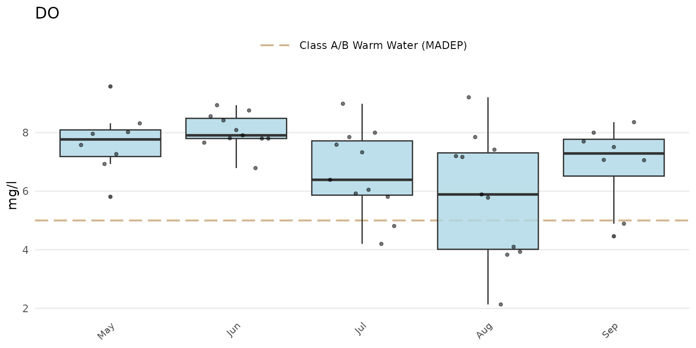
The same data can also be grouped by week using
group = "week". The week of the year is shown on the plot
as an integer. Note that there can be no common month/day indicating the
start of the week between years and an integer is the only way to
compare summaries if the results data span multiple years.
anlzMWRseason(res = resdat, param = "DO", acc = accdat, thresh = "fresh", group = "week", type = "box")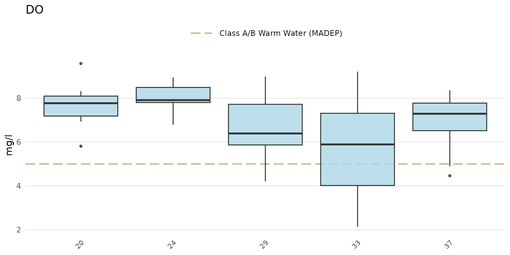
Barplots can be shown using type = "bar". The barplots
show the average estimate for the results defined by the
group argument.
anlzMWRseason(res = resdat, param = "DO", acc = accdat, thresh = "fresh", group = "month", type = "bar")Confidence intervals at 95% for the barplots can be shown by setting
confint = TRUE.
anlzMWRseason(res = resdat, param = "DO", acc = accdat, thresh = "fresh", group = "month", type = "bar", confint = TRUE)
Jittered points over the barplots can be shown by setting
type = "jitterbar".
anlzMWRseason(res = resdat, param = "DO", acc = accdat, thresh = "fresh", group = "month", type = "jitterbar")
Setting type = "jitter" will show only the jittered
points.
anlzMWRseason(res = resdat, param = "DO", acc = accdat, thresh = "fresh", group = "month", type = "jitter")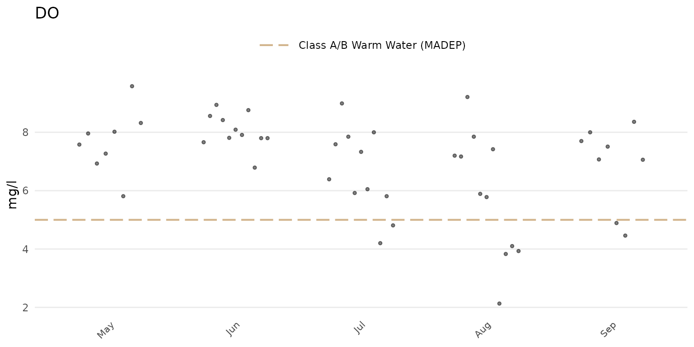
The threshold lines shown on each plot are determined from the
thresholdMWR file included with MassWateR. These threshold
lines describe relevant state standards or typical ranges in
Massachusetts, if applicable for a parameter. Thresholds can be plotted
for freshwater or marine environments using the thresh
argument as thresh = "fresh" or
thresh = "marine", respectively. Two threshold lines are
typically shown, whereas some parameters may only have one threshold
line. Other parameters have no information in the
thresholdMWR file and lines will not be plotted. Threshold
lines can be suppressed by setting thresh = "none". Below,
the marine thresholds are shown for dissolved oxygen using the barplot
option grouped by month.
anlzMWRseason(res = resdat, param = "DO", acc = accdat, thresh = "marine", group = "month", type = "bar")
A user-supplied numeric value can also be used for the
thresh argument. The threshlab argument must
also be used to label the custom threshold in the plot legend.
anlzMWRseason(res = resdat, param = "DO", acc = accdat, thresh = 8, threshlab = "Custom threshold", group = "month", type = "bar")The y-axis scaling as arithmetic (linear) or logarithmic can be set
with the yscl argument. If yscl = "auto"
(default), the scaling is determined automatically from the data quality
objective file for accuracy, i.e., parameters with “log” in any of the
columns are plotted on log10-scale, otherwise arithmetic. Setting
yscl = "linear" or yscl = "log" will set the
axis as linear or log10-scale, respectively, regardless of the
information in the data quality objective file for accuracy. Below, the
axis for E. Coli is plotted on the log-10 scale automatically. The
y-axis scaling does not need to specified explicitly in the function
call because the default setting is yscl = "auto".
anlzMWRseason(res = resdat, param = "E.coli", acc = accdat, thresh = "fresh", group = "month", type = "bar")
To force the y-axis as linear for E. Coli,
yscl = "linear" must be used. Note that the default linear
scaling for dissolved oxygen above is determined automatically. The
means and confidence intervals will also vary between arithmetic and
log-scaling if type = "bar".
anlzMWRseason(res = resdat, param = "E.coli", acc = accdat, thresh = "fresh", group = "month", type = "bar", yscl = "linear")
If type is "bar" or
"jitterbar", the data will be summarized using the mean or
geometric mean as appropriate for the parameter based on information in
the data quality objective file for accuracy. By default, the summary is
based on the yscl argument. The default can be changed by
passing a value to the sumfun argument, where appropriate
values include "auto" (automatically as mean or geometric
mean using information in the data quality objective file for accuracy),
"mean", "geomean", "median",
"min", or "max". Confidence intervals will be
included if confint = TRUE and the summary is automatic or
the mean or geometric mean is used to override the automatic summary.
Below, the median summary is shown for E. coli.
anlzMWRseason(res = resdat, param = "E.coli", acc = accdat, thresh = "fresh", group = "month", type = "bar", sumfun = "median")
Results can also be filtered by dates using the dtrng
argument. The date format must be YYYY-MM-DD and include
two entries.
anlzMWRseason(res = resdat, param = "E.coli", acc = accdat, thresh = "fresh", group = "month", type = "bar", dtrng = c("2022-05-01", "2022-07-31"))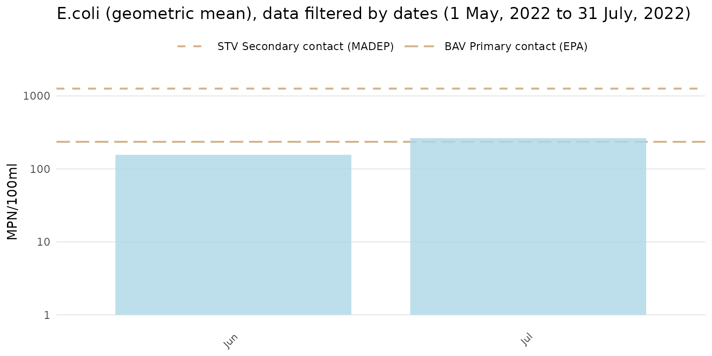
Finally, the results can be filtered by sites, result attributes, and
location groups using the site, resultatt, and
locgroup arguments. These options will filter the results
data based on values in the Monitoring Location ID and
Result Attribute columns in the results file and by the
Location Group column in the site metadata file, which must
be provided to the sit argument if locgroup is
used.
anlzMWRseason(res = resdat, param = "DO", acc = accdat, sit = sitdat, thresh = "fresh", group = "month", site = "ABT-077", resultatt = "DRY", locgroup = "Assabet")
Analyze trends by date
Trends by date for selected parameters can be evaluated using the
anlzMWRdate() function. The plot shows results continuously
over time as line plots, with the lines separated by site, combined
across sites, or combined across location groups. For location groups,
the site metadata file must be supplied. Many of the options described
for the anlzMWRseason() function also apply and will not be
repeated here. As before, the required data are a results file and data
quality objective file for accuracy. These can be passed to the function
with the separate arguments or as a named list using the
fset argument.
The default plot for anlzMWRdate() will show separate
lines for each site, y-axis scaling determined automatically from the
data quality objectives file, and site labels at the end of each line.
All sites in the results file will be plotted, which can be difficult to
visualize. Selecting specific sites with the site argument
is recommended.
anlzMWRdate(res = resdat, param = "DO", acc = accdat, thresh = "fresh", group = "site", site = c("ABT-026", "ABT-077"))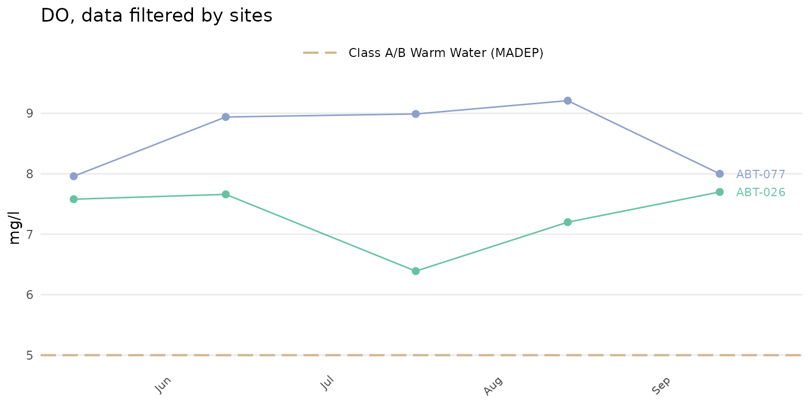
A color legend for the sites can be included by setting
colleg = TRUE.
anlzMWRdate(res = resdat, param = "DO", acc = accdat, thresh = "fresh", group = "site", site = c("ABT-026", "ABT-077"),
colleg = T)
The color palette for the site points and lines can also be changed.
Any palette from RColorBrewer can be used. These could include any of
the qualitative color palettes, e.g., "Set1",
"Set2", etc. The continuous and diverging palettes will
also work, but may return color scales for points and lines that are
difficult to distinguish. The palcol argument does not
apply if group = "all". In the following example, the
qualitative "Set1" palette is used.
anlzMWRdate(res = resdat, param = "DO", acc = accdat, thresh = "fresh", group = "site", site = c("ABT-026", "ABT-077"), palcol = "Set1")
The results averaged across the selected sites can be plotted using
group = "all". The point and line color defaults to
black.
anlzMWRdate(res = resdat, param = "DO", acc = accdat, thresh = "fresh", group = "all", site = c("ABT-026", "ABT-077"))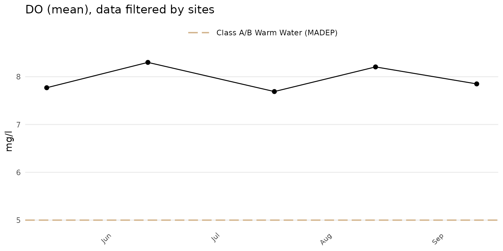
The results averaged across all sites in the results file can be
plotted by omitting the site argument.
anlzMWRdate(res = resdat, param = "DO", acc = accdat, thresh = "fresh", group = "all")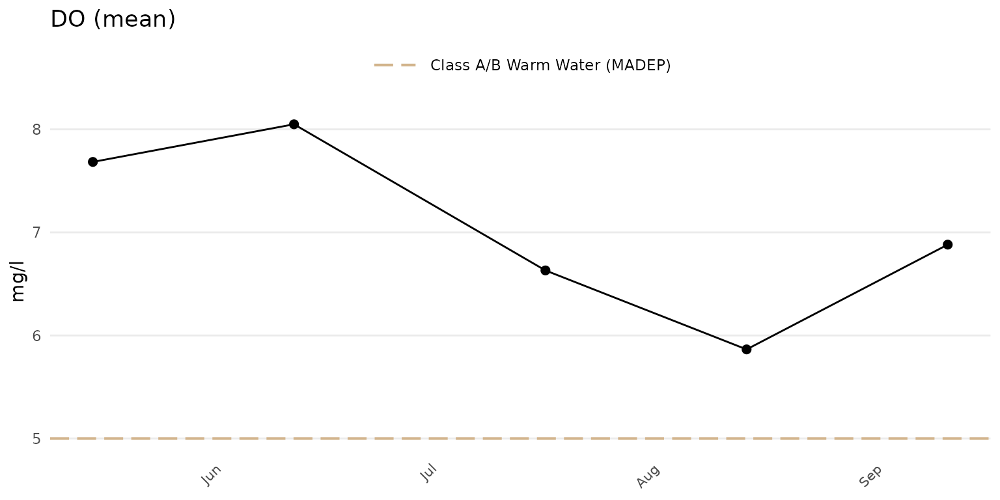
Confidence intervals at 95% for the points can be shown when
group = "all" or "locgroup" by setting
confint = TRUE.
anlzMWRdate(res = resdat, param = "DO", acc = accdat, thresh = "fresh", group = "all", confint = TRUE)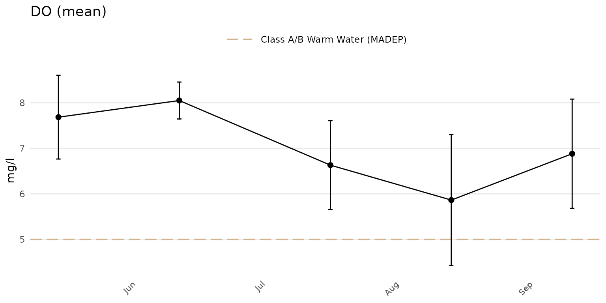
Sites can be summarized across location groups using
group = "locgroup". This option requires the site metadata
file passed to the sit argument and appropriate values for
the location groups passed to the locgroup argument that
match values in the Location Group column of the site
metadata file.
anlzMWRdate(res = resdat, param = 'DO', acc = accdat, sit = sitdat, group = 'locgroup',
thresh = 'fresh', locgroup = 'Assabet')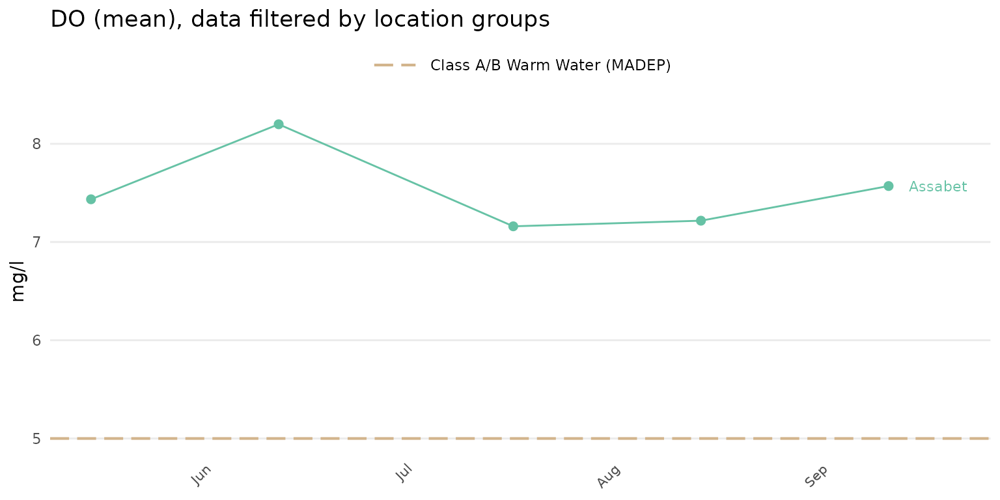
All location groups can be used if the locgroup argument
is omitted.
anlzMWRdate(res = resdat, param = 'DO', acc = accdat, sit = sitdat, group = 'locgroup',
thresh = 'fresh')
Alternative summaries can also be used if group = "all"
or "locgroup" by using an appropriate value for the
sumfun argument. By default, the sumfun
argument is based on the value passed to yscl, i.e.,
automatic summaries (yscl = "auto") as mean or geometric
mean based on information in the data quality objective file for
accuracy or using mean or geometric regardless of the accuracy file
(yscl = "linear" or yscl = "log"). Using any
appropriate value for the sumfun argument will override any
value used for the yscl argument. Options for
sumfun include "auto" (automatically as mean
or geometric mean using information in the data quality objective file
for accuracy), "mean", "geomean",
"median", "min", or "max". Below,
the median is used to summarize results by location group.
anlzMWRdate(res = resdat, param = 'DO', acc = accdat, sit = sitdat, group = 'locgroup',
thresh = 'fresh', sumfun = 'median')
Analyze data by site
Result data by site for selected parameters can be evaluated using
the anlzMWRsite() function. This function summarizes
results for a single parameter using boxplots or barplots separately for
each site on the x-axis. Boxplots or barplots can also include jittered
points of the observations on top or only the jittered points can be
shown. Many of the options described for the
anlzMWRseason() function also apply and will not be
repeated here. As before, the required data are a results file and data
quality objective file for accuracy. These can be passed to the function
with the separate arguments or as a named list using the
fset argument.
The default plot for anlzMWRsite() will show boxplots of
results for each site and y-axis scaling determined automatically from
the data quality objectives file.
anlzMWRsite(res = resdat, param = "DO", acc = accdat, thresh = "fresh", type = "box")
Jittered points over the boxplots can be shown by setting
type = "jitterbox".
anlzMWRsite(res = resdat, param = "DO", acc = accdat, thresh = "fresh", type = "jitterbox")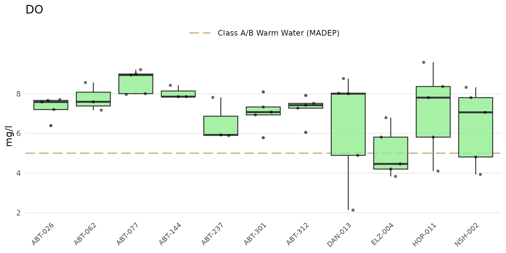
Results as barplots can be shown using type = "bar".
anlzMWRsite(res = resdat, param = "DO", acc = accdat, thresh = "fresh", type = "bar")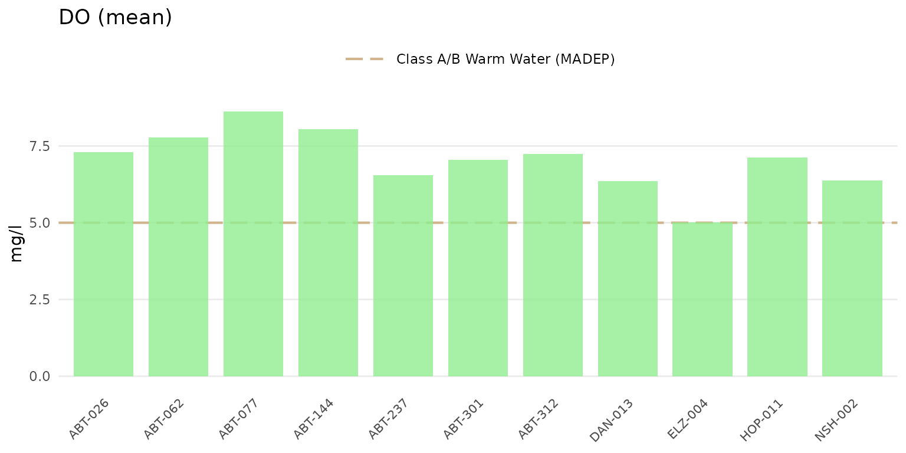
Confidence intervals at 95% for the barplots can be shown by setting
confint = TRUE.
anlzMWRsite(res = resdat, param = "DO", acc = accdat, thresh = "fresh", type = "bar", confint = TRUE)
Jittered points over the barplots can be shown by setting
type = "jitterbar".
anlzMWRsite(res = resdat, param = "DO", acc = accdat, thresh = "fresh", type = "jitterbar")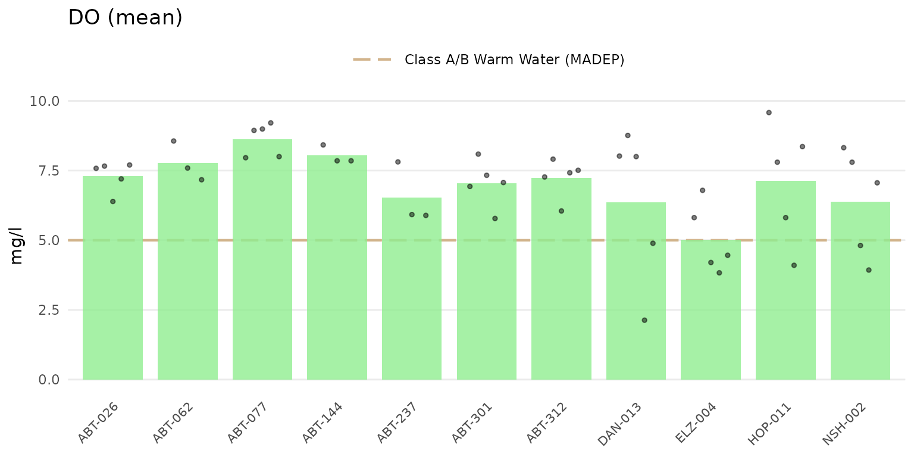
Setting type = "jitter" will show only the jittered
points.
anlzMWRsite(res = resdat, param = "DO", acc = accdat, thresh = "fresh", type = "jitter")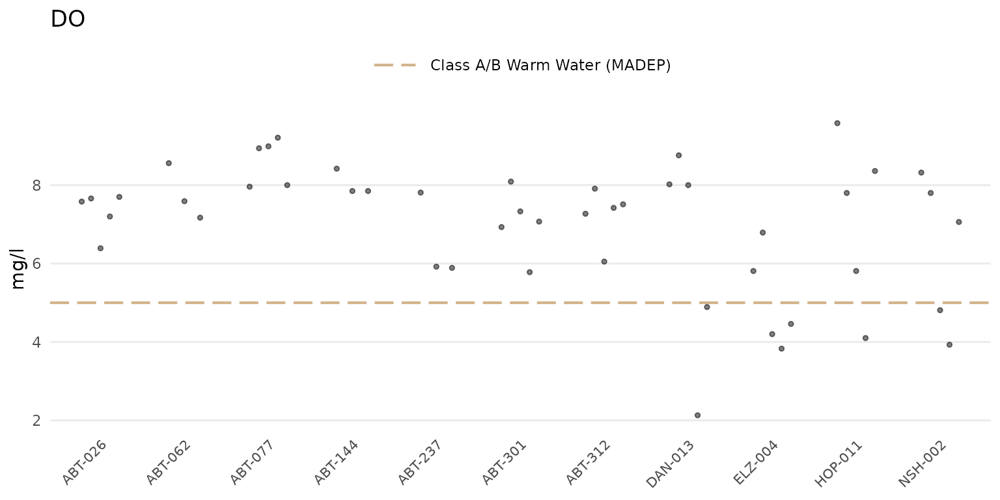
If type is "bar" or
"jitterbar", the data will be summarized using the mean or
geometric mean as appropriate for the parameter based on information in
the data quality objective file for accuracy. By default, the summary is
based on the yscl argument. The default can be changed by
passing a value to the sumfun argument, where appropriate
values include "auto" (automatically as mean or geometric
mean using information in the data quality objective file for accuracy),
"mean", "geomean", "median",
"min", or "max". Below, the median summary is
shown.
anlzMWRsite(res = resdat, param = "DO", acc = accdat, thresh = "fresh", type = "jitterbar",
sumfun = 'median')
Results can be grouped by entries in the Result Atribute
column using byresultatt = TRUE. For example, sites with DO
samples can be grouped by "DRY" or "WET"
conditions. Filtering by sites first using the site
argument is advised to reduce the amount of data that are plotted. The
grouping can be filtered further by passing appropriate values in the
Result Attribute column to the resultatt
argument. Note that specifying result attributes with
resultatt and setting byresultatt = FALSE will
filter the plot data by the result attributes but will not plot the
results separately.
anlzMWRsite(res = resdat, param = "DO", acc = accdat, thresh = "fresh", type = "box",
site = c("ABT-026", "ABT-062", "ABT-077", "ABT-144", "ABT-237", "ABT-301"),
resultatt = c('DRY', 'WET'), byresultatt = TRUE)
Analyze results with maps
The anlzMWRmap() function can be used to create a map of
summarized results for a selected parameter at each monitoring site. By
default, all dates for the parameter are summarized as the mean or
geometric mean based on information in the data quality objective file
for accuracy. Options to filter by site, date range, and result
attribute are provided. Only sites with spatial information in the site
metadata file are plotted and a warning is returned for those that do
not have this information. The site labels are also plotted next to each
point.
A map of dissolved oxygen averages across all dates can be created as
follows. The required inputs are the results data, the data quality
objective file for accuracy, and the site metadata file with the site
locations. These can be passed to the function with the separate
arguments or as a named list using the fset argument.
anlzMWRmap(res = resdat, param = "DO", acc = accdat, sit = sitdat, addwater = "medium")
The results shown on the map represent the parameter summary for each
site across the sample dates. If sumfun = "auto" (default),
the mean is used where the distribution is determined automatically from
the data quality objective file for accuracy, i.e., parameters with
“log” in any of the columns are summarized with the geometric mean,
otherwise arithmetic. Any other valid summary function will be applied
if passed to sumfun ("mean",
"geomean", "median", "min",
"max"), regardless of the information in the data quality
objective file for accuracy. Below, the minimum dissolved oxygen is
shown. The color palette is also reversed.
anlzMWRmap(res = resdat, param = "DO", acc = accdat, sit = sitdat, addwater = "medium",
sumfun = "min", palcolrev = TRUE)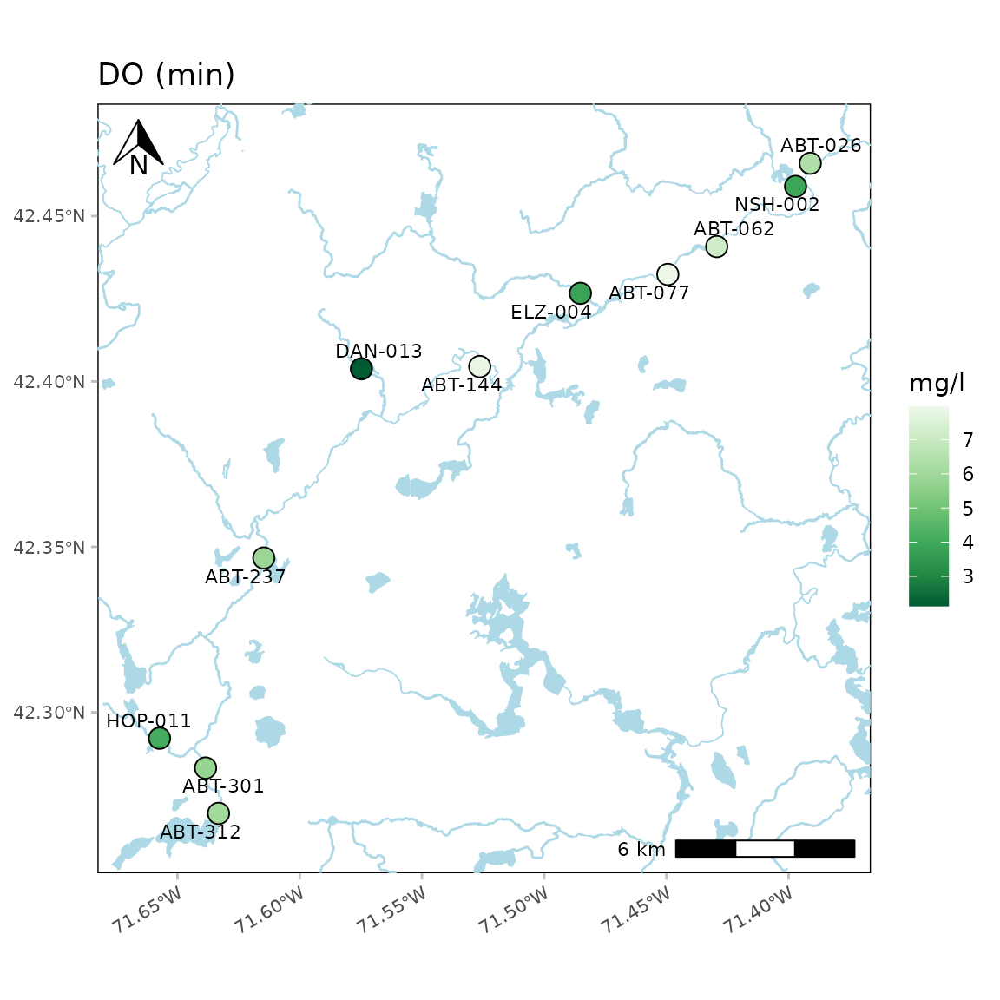
By default, lines and polygons of natural water bodies defined using
the National Hydrography Dataset (NHD) are plotted. Using
addwater = "medium" (default) will plot water bodies at
medium detail. The level of detail can be changed to low or high using
addwater = "low" or addwater = "high",
respectively. Use addwater = NULL to not show any water
features.
Water body detail as low:
anlzMWRmap(res = resdat, param = "DO", acc = accdat, sit = sitdat, addwater = "low", warn = F)
Water body detail as high:
anlzMWRmap(res = resdat, param = "DO", acc = accdat, sit = sitdat, addwater = "high", warn = F)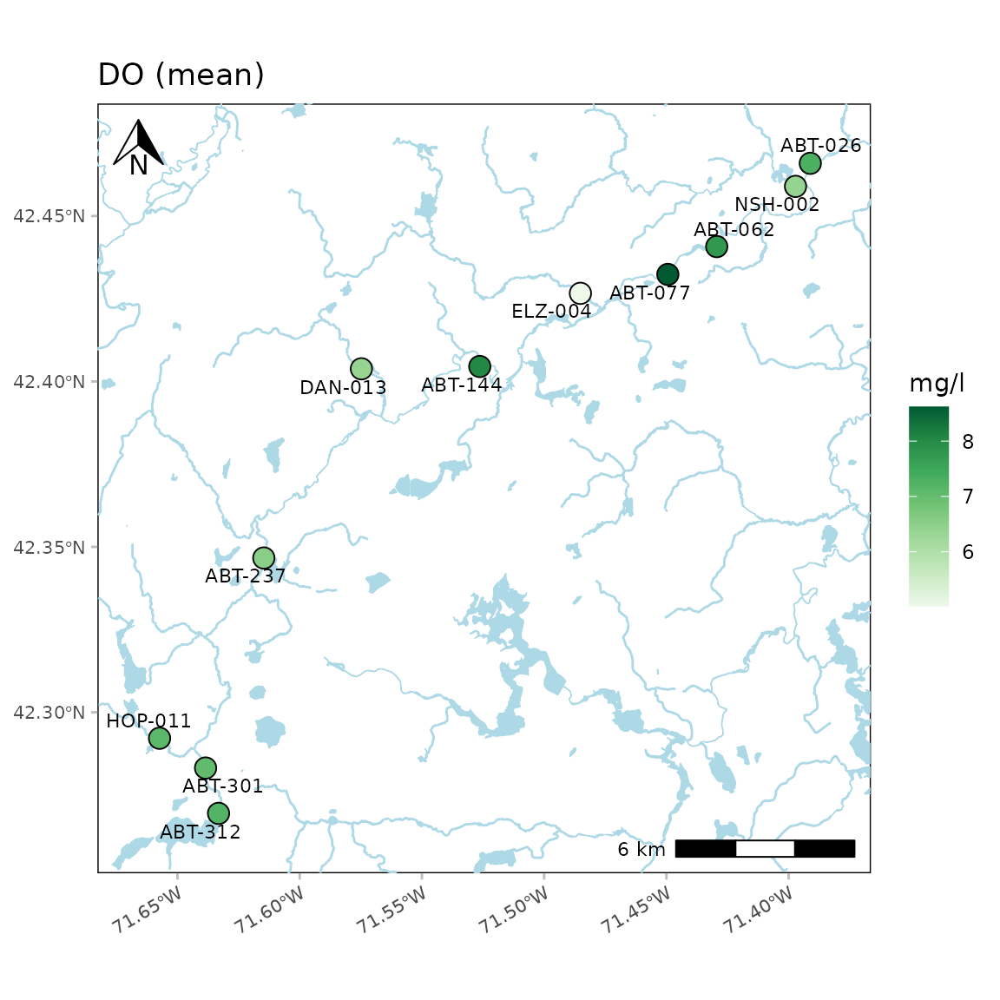
A north arrow, scale bar, and labels are also plotted. These can be
suppressed by setting the appropriate arguments to
NULL.
anlzMWRmap(res = resdat, param = "DO", acc = accdat, sit = sitdat, northloc = NULL, scaleloc = NULL, labsize = NULL, warn = F)
Locations of the north arrow and scale bar can be changed with the
same arguments by specifying "tl", "tr",
"bl", or "br" for top-left, top-right,
bottom-left, or bottom-right.
anlzMWRmap(res = resdat, param = "DO", acc = accdat, sit = sitdat, northloc = "br", scaleloc = "tl", warn = F)
The latitude and longitude text on the plot axes can be suppressed
using latlon = FALSE.
anlzMWRmap(res = resdat, param = "DO", acc = accdat, sit = sitdat, latlon = F, warn = F)
The color palette for the average values can also be changed. Any
palette from RColorBrewer can be used. These could include any of
the sequential color palettes, e.g., "Greens",
"Blues", etc. The diverging and qualitative palettes will
also work, but may return uninterpretable color scales. In the following
example, the diverging "Spectral" palette is used.
anlzMWRmap(res = resdat, param = "DO", acc = accdat, sit = sitdat, palcol = "Spectral", warn = F)
The buffered distance around the points can be increased using the
buffdist argument (in kilometers).
anlzMWRmap(res = resdat, param = "DO", acc = accdat, sit = sitdat, buffdist = 20, warn = F)
A base map can be included as well using the maptype
argument. Options include "OpenStreetMap",
"OpenStreetMap.DE", "OpenStreetMap.France",
"OpenStreetMap.HOT", "OpenTopoMap",
"Esri.WorldStreetMap", "Esri.DeLorme",
"Esri.WorldTopoMap", "Esri.WorldImagery",
"Esri.WorldTerrain", "Esri.WorldShadedRelief",
"Esri.OceanBasemap", "Esri.NatGeoWorldMap",
"Esri.WorldGrayCanvas", "CartoDB.Positron",
"CartoDB.PositronNoLabels",
"CartoDB.PositronOnlyLabels",
"CartoDB.DarkMatter",
"CartoDB.DarkMatterNoLabels",
"CartoDB.DarkMatterOnlyLabels",
"CartoDB.Voyager", "CartoDB.VoyagerNoLabels",
or "CartoDB.VoyagerOnlyLabels". The zoom
argument can be helpful when using a basemap. The default
zoom argument is set to 11 and decreasing the number will
download a base map with lower resolution. This can decrease map
processing times for large areas.
A "CartoDB.Positron" base map:
anlzMWRmap(res = resdat, param = "DO", acc = accdat, sit = sitdat, maptype = "CartoDB.Positron", warn = F, addwater = NULL)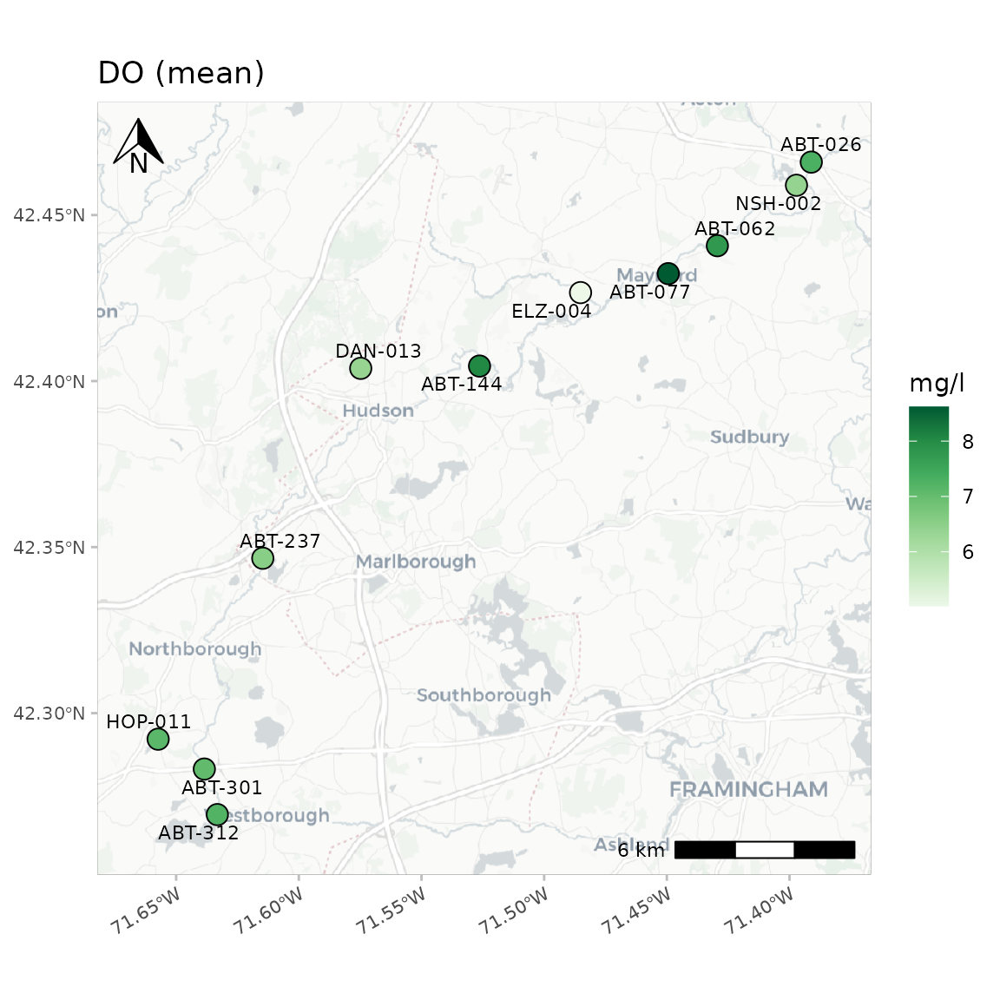
A "Esri.WorldImagery" base map:
anlzMWRmap(res = resdat, param = "DO", acc = accdat, sit = sitdat, maptype = "Esri.WorldImagery", warn = F, addwater = NULL)
A map with no base map or water bodies:
anlzMWRmap(res = resdat, param = "DO", acc = accdat, sit = sitdat, maptype = NULL, warn = F, addwater = NULL)